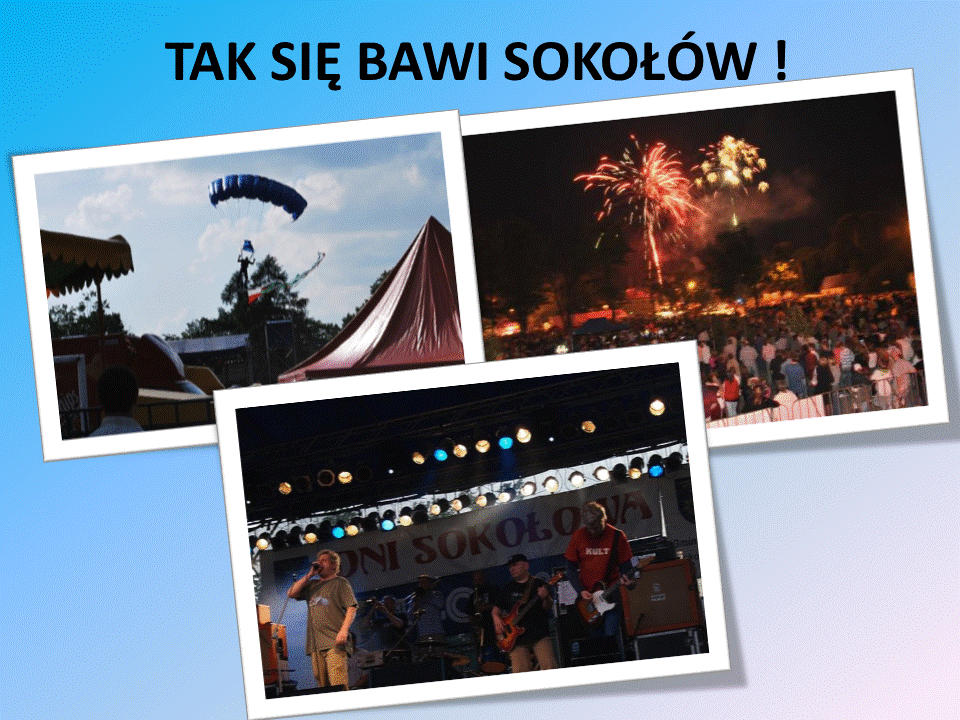

W Sokołowie Małopolskim miejsce mają różne wydarzenia kulturalno-społeczne. Co roku odbywa się tu wiele imprez. Jedną z nich są Dni Miasta, impreza trwa zazwyczaj dwa dni i jest w okresie wakacji. W tedy też odbywa sie tu wiele koncertów i różnych pokazów wokalno-artystycznych. Sportowym wydarzeniem jest coroczny Bieg Sokoła. To mini maraton. Innymi wydarzeniami które się tu odbywają są Dożynki oraz Piknik Rodzinny. Zima to czas kiedy "Miejski Dom Kultury" zaprasza na pokazy filmowe. Można też skorzystać z różnych aktywności tzn. zabawy czy kólka zainteresowań. To tylko nieliczne wydarzenia. W tym roku miały miejsce także pokazy kaskaderskie czy też występy kabaretów. Miasteczko żyje swoim życiem. W niedzielne popołudnia są mecze miejscowej drużyny. Cotygodniowo można wybrać się też na jeden z wiekszych jarmarków w okolicy, odbywa się on w środy. Kryta pływalnia dostarcza także wielu atrakcji, szczególnie najmłodszym.
Liczba mieszkańców:17074
Powierzchnia: 134,2 km²
Zaludnienie: 127 osób/km²
Tablice rejestracyjne: RZE